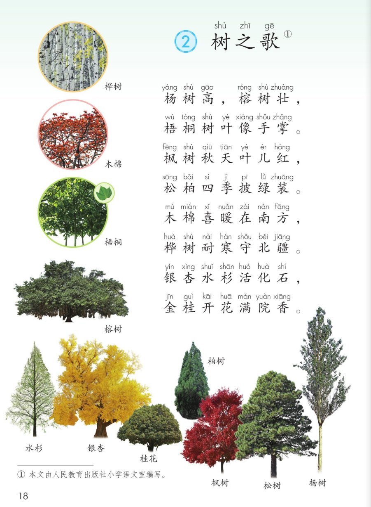
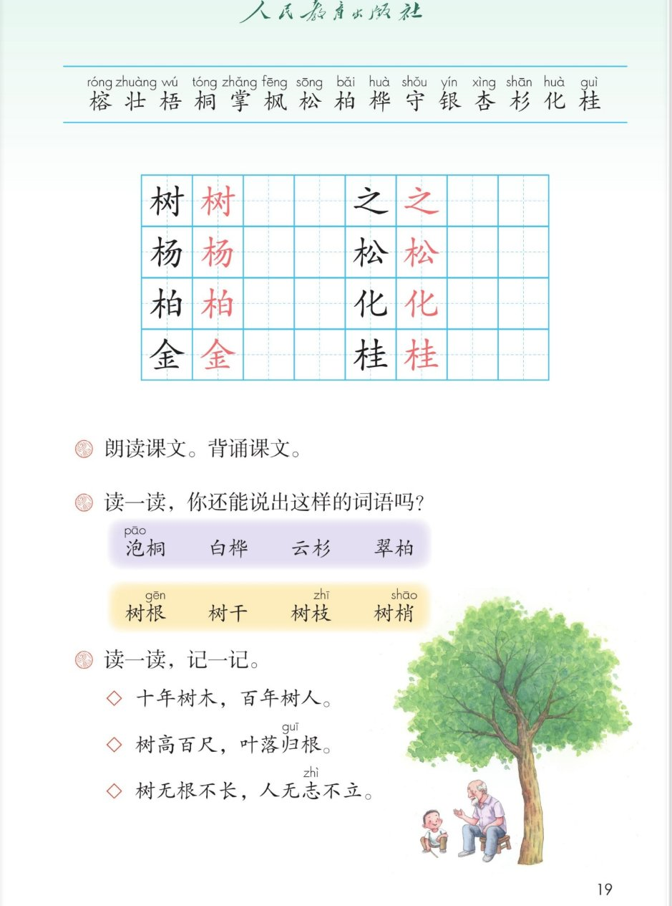

×
🔊 手机听不到声音怎么办？照这 3 步做
① 用
Edge 浏览器打开
www.jeepsh.cn（在微信里打开的点右上角「⋯ → 在浏览器打开」；没装 Edge 就到应用商店搜「Edge」安装）。
② 应用商店搜
「讯飞语记」安装 → 打开它 →
通用设置 → 语音合成设置 → 打开
「合成系统接口」和
「全局生效」两个开关 → 再选一个
中文发音人。
③ 系统语言设为
简体中文，点「
播放」试听能说中文后，
彻底关闭浏览器再重开（后台划掉），回到课件点读就有声音。
→ 打开声音自检
🌳 第 2 课《树之歌》· 有声图文带读
统编版语文 · 第二单元·识字 · 课本 P18~19
课文 4 个小节
会认字 15
会写字 8
听写词 8
近义词 4 组
深入理解 8 题
本课本领 认树·背儿歌
🎧 五步学（可随时点任意一句、一个字、一个词单独听）：
① 听读课文——一行一行读，读到哪一句哪一句发光；开「跟读」后读完一句留时间让你自己读。
② 学字词——15 个会认字、8 个会写字（含书写提示），点一个读一个。
③ 词语·听写·造句——听写 8 个词（读两遍→你写→报答案→听示范句），再听 4 组近义词辨析。
④ 深入理解——8 道题（认知 / 理解 / 运用 / 拓展），开放题答案不唯一，先想后看。
⑤ 树的介绍·分角色——四种树怎么介绍自己，再分角色把这首儿歌读出来。
① 听读课文（点哪一句，读哪一句）点每节前的 ①②③④ 听整节
注音只标本课要认、要写的字，读音来自课本第 19 页生字表
🎤 朗读要求（老师标准）
① 读准字音：榕（róng）、柏（bǎi）、杉（shān）、桦（huà）；
② 逗号处轻停，句号处停稳；
③ 读得像拍手歌，一句一句有节奏；
④ 读到「杨树高、榕树壮」要读出样子；
⑤ 最后「满院香」读得慢一点，像闻到了香味。
①杨树高，榕树壮，
梧桐树叶像手掌。
②枫树秋天叶儿红，
松柏四季披绿装。
③木棉喜暖在南方，
桦树耐寒守北疆。
④银杏水杉活化石，
金桂开花满院香。
🤔 想一想（点我可跳过）
课本的样子（点一张图，听读这一页）照录课本原文

第 18 页 · 课文与树的照片

第 19 页 · 生字与课后题
📖 人教版《语文》二年级上册 · 课本第 18~19 页 · 图片仅供个人学习，版权归人民教育出版社所有
📖 课本原注：① 本文由人民教育出版社小学语文室编写。
② 会认字（15 个）点一个字，听读音、词语和课文里的句子
② 会写字（8 个）结构、部首、笔画与书写提示为通用规范，供参考，以教材和老师的指导为准
树
shù
树叶 · 大树
9 画 · 左右（木）
左窄右宽，木旁末笔变点
之
zhī
之后 · 总之
3 画 · 独体
点在上，横撇舒展，捺写平
杨
yáng
杨树 · 白杨
7 画 · 左右（木）
左窄右宽，右边两撇要匀
松
sōng
松树 · 松柏
8 画 · 左右（木）
左窄右宽，右撇捺舒展
柏
bǎi
柏树 · 松柏
9 画 · 左右（木）
左窄右宽，右边日要方正
化
huà
化石 · 变化
4 画 · 左右（亻）
单人撇要长，右竖弯钩舒展
金
jīn
金色 · 金桂
8 画 · 上下
人字头要宽，末横最长
桂
guì
桂花 · 金桂
10 画 · 左右（木）
左窄右宽，右两土紧凑
③ 会写字的组词（一字开花）点一行，听读这一组词语
树 之树叶 大树 之后 总之
杨 松 柏杨树 白杨 松树 松柏 柏树
化 金 桂化石 变化 金色 桂花 金桂
③ 听写（8 个词）读两遍 → 你在纸上写 → 报答案 → 听示范句
准备听写 · 共 8 个词
○ ○ ○
点下面的「开始听写」，听到一个词就写一个词。
③ 听写的词 · 造句示范点词听读，点句子听示范句，再自己说一句
1树叶会写字
示范句：梧桐树的树叶像手掌。
✏️ 我也能说：什么树的树叶，像什么。比如：银杏树的树叶像小扇子。
2之后会写字
示范句：下课之后，我们去操场玩。
✏️ 我也能说：什么之后，谁做什么。比如：放学之后，我先写作业。
3杨树会写字
示范句：路两边种着一排杨树，又高又直。
✏️ 我也能说：哪里有什么树，什么样子。比如：村口有一棵杨树，比我家的房子还高。
4松树会写字
示范句：山坡上的松树一年四季都是绿的。
✏️ 我也能说：哪里的松树怎么样。比如：公园里的松树又高又绿。
5柏树会写字
示范句：校园里种着两排柏树，像一排小塔。
✏️ 我也能说：柏树像什么。比如：柏树又直又绿，像站岗的士兵。
6化石会写字
示范句：博物馆里有一块恐龙化石。
✏️ 我也能说：哪里有什么化石。比如：我在博物馆看见了一块鱼化石。
7金色会写字
示范句：秋天到了，稻田一片金色。
✏️ 我也能说：什么是金色的。比如：阳光照在金色的桂花上。
8桂花会写字
示范句：桂花开了，院子里到处是香味。
✏️ 我也能说：哪里的桂花，怎么样。比如：楼下的桂花开了，香得我想多站一会儿。
③ 近义词辨析（4 组）相同点 / 不一样在哪 / 各造一句
壮 — 强壮
相同：都是粗大、结实、有力气。
不一样：壮可以单说，一个字就把样子说出来；强壮多用来写身体。
壮：这棵榕树又粗又壮。
强壮：坚持锻炼，身体就强壮。
耐寒 — 抗寒
相同：都是不怕冷。
不一样：耐寒是受得住寒冷，写树写植物最常用；抗寒是抵抗寒冷，更强调顶得住。
耐寒：桦树很耐寒，长在北方也不怕。
抗寒：这种麦子能抗寒，冬天也冻不死。
守 — 守卫
相同：都是看着、保护。
不一样：守可以说得很小很近，比如守门口、守北疆；守卫多指站岗保护重要地方，更庄重。
守：桦树像卫士一样守着北疆。
守卫：战士们在守卫大桥。
满 — 全
相同：都有整个、都的意思。
不一样：满是装得足足的、到处都是；全是全都、一个也不缺。
满：金桂开花满院香。
全：全班同学都来了。
③ 词语拓展（说一说，记一记）
课文里的树杨树 榕树 梧桐 枫树 松柏 木棉 桦树 银杏 水杉 金桂
树的部位树根 树干 树枝 树梢
更多树名泡桐 白桦 云杉 翠柏
树的量词一棵树 一片树林 一行树 一丛小树
读一读记一记十年树木，百年树人 树高百尺，叶落归根 树无根不长，人无志不立
④ 深入理解（8 题 · 先想后看）标「答案不唯一」的题，说得有道理都对
认知课文一共写了几种树？把它们的名字说出来。
看解析
🤔 想一想
解析：
第一句写了杨树、榕树、梧桐三种。
第二句写了枫树、松树、柏树三种。
第三句写了木棉、桦树两种。
第四句写了银杏、水杉、金桂三种。
数一数：3 + 3 + 2 + 3 = 11 种。数的时候要一个不漏。
认知课文里哪种树被叫做“活化石”？为什么这样叫？
看解析
🤔 想一想
解析：
课文说：银杏水杉活化石。
化石是埋在石头里的古生物留下的痕迹。
银杏和水杉活了一亿多年，和它们同时代的很多植物都没有了，所以叫活化石。
活化石不是说它变成了石头，是说它像化石一样古老，可还活着。
理解为什么说“松柏四季披绿装”？
看解析
🤔 想一想
解析：
“四季”就是春夏秋冬一整年。
“披绿装”是把它们当作人来写，说它们一年到头穿着绿衣服。
别的树秋天落叶、冬天光秃秃，松柏还是绿的，所以说披绿装。
把树当成人来写，读起来就亲切了。
理解“木棉喜暖在南方，桦树耐寒守北疆”这句话告诉我们什么？
看解析
🤔 想一想
解析：
“喜暖”就是喜欢暖和，“耐寒”就是不怕冷。
南方热，所以木棉长得好；北方冷，桦树照样能活。
这句话还告诉我们：树的脾气不一样，长的地方也不一样。
一个“喜暖”、一个“耐寒”，把两种树的脾气说清楚了。
理解“梧桐树叶像手掌”用了什么办法？把什么比作什么？
看解析
🤔 想一想
解析：
梧桐的叶子又大又宽，几个尖角像手指，张开就像一只手。
用了“像”字，就是把一样东西比作另一样东西。
这样的句子读起来，眼前就能看见那片叶子。
带“像”字的句子，多半是在打比方。
运用（课后题②）读一读，你还能说出这样的词语吗：泡桐 白桦 云杉 翠柏／树根 树干 树枝 树梢
看解析
🤔 想一想
解析：
第一组都是树名，前面一个字说特点，后面一个字都是木字旁：泡桐、白桦、云杉、翠柏。还能说：梧桐、枫树、松树、柏树。
第二组都是“树 + 部位”：树根、树干、树枝、树梢。还能说：树叶、树皮、树冠、树林。
说的时候注意：“干”在这里读第四声，是树的主干；“梢”是第一声，是最高的枝头。
🌈 答案不唯一：能说出同类的新词，说得对就行。
运用（课后题③）读一读，记一记：“十年树木，百年树人。”这句话是什么意思？
看解析
🤔 想一想
解析：
“十年树木”是说树长得快，十年就成材了。
“百年树人”是说培养人更慢，要一代一代教下去。
这句话是告诉我们要重视教育，也要有耐心。
🌈 答案不唯一：能说出“培养人比种树更难、更需要耐心”，就说到点子上了。
拓展如果给学校种一棵树，你想种课文里的哪一种？说说理由。
看解析
🤔 想一想
解析：
想种银杏：它叫活化石，秋天叶子变金黄，特别好看。
想种金桂：开花的时候满院香，同学们走过都能闻到。
想种松柏：四季常绿，冬天校园里也不冷清。
说的时候可以用上课文里的词：壮、高、耐寒、满院香。
🌈 答案不唯一：种什么都可以，理由说得清楚、用上课文的词，就更棒。
⑤ 树的介绍（说一说，连起来）
💬 说话支架：先说它长什么样 → 再说它住在哪里 → 最后说它有什么本领。
⑤ 分角色朗读（四种树，一人读一句）点一个角色，听他（她）读的那一句
🌳 杨树·榕树
“杨树高，榕树壮，梧桐树叶像手掌。”
💬 语气：声音响亮，「高」和「壮」读出力气
🍁 枫树·松柏
“枫树秋天叶儿红，松柏四季披绿装。”
💬 语气：声音明亮，「叶儿红」读得软一点
🌲 木棉·桦树
“木棉喜暖在南方，桦树耐寒守北疆。”
💬 语气：前半句暖暖的，后半句坚定
🪴 银杏·水杉·金桂
“银杏水杉活化石，金桂开花满院香。”
💬 语气：「活化石」读出惊奇，「满院香」读得慢而轻
📖 旁白
“《树之歌》：杨树高……”
💬 语气：读得清楚、有节奏，像带着全班拍手读
📚 课后题（照录课本）
① 朗读课文。背诵课文。
② 读一读，你还能说出这样的词语吗？
泡桐 白桦 云杉 翠柏
树根 树干 树枝 树梢
③ 读一读，记一记。
◇ 十年树木，百年树人。
◇ 树高百尺，叶落归根。
◇ 树无根不长，人无志不立。